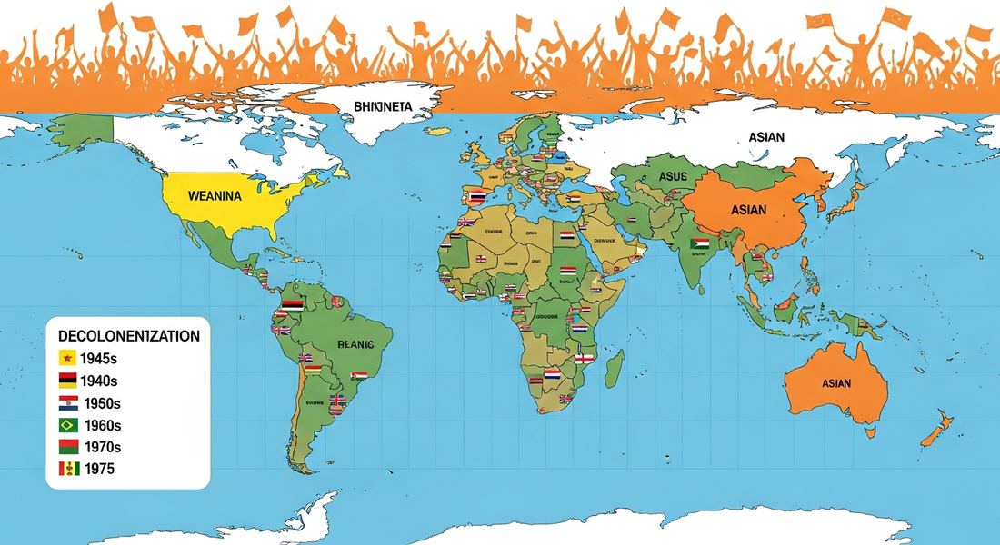

8.5 Decolonization After 1900
- LO-A: Decolonization was massive, 50+ new nations in 30 years: Between roughly 1945 and 1975, most of Asia and Africa gained independence. This was one of the most rapid geopolitical transformations in world history. The AP CED organizes it around three paths: negotiated independence, armed struggle, and regional/ethnic/religious movements. Nationalist leaders are required CED examples, know all four: Indian National Congress (India), Ho Chi Minh in French Indochina, Kwame Nkrumah in British Gold Coast (Ghana), Gamal Abdel Nasser in Egypt. Each pursued independence through different methods. Three paths to independence: Negotiated: India from Britain, Gold Coast from Britain, French West Africa. Armed struggle: Algeria from France, Angola from Portugal, Vietnam from France. Regional/ethnic/religious movements: Muslim League (India), Québécois (Canada), Biafra (Nigeria). Colonial borders created post-independence problems: Imperial powers drew borders that ignored ethnic, religious, and linguistic realities, then bequeathed those borders to new nations. The Muslim League's demand for Pakistan and the Biafra secessionist movement in Nigeria both arose from these inherited border problems.
Try each question before revealing the answer.
1. Why did some colonies achieve independence through negotiation while others required armed struggle? What factors determined which path was taken?
2. What was Gamal Abdel Nasser's significance beyond Egyptian independence? Why is he important for AP World History?
3. The Muslim League (British India) and the Biafra secessionist movement (Nigeria) are both examples of "regional, religious, and ethnic movements" that "challenged colonial rule and inherited imperial boundaries." What does this tell us about the legacy of colonial borders?
- Compare the processes by which various peoples pursued independence after 1900, nationalist leaders and parties, negotiated vs. armed independence, and regional/religious/ethnic movements. CED Examples: Indian National Congress, Ho Chi Minh (Vietnam), Kwame Nkrumah (Ghana), Gamal Abdel Nasser (Egypt); India, Gold Coast, French West Africa (negotiated); Algeria, Angola, Vietnam (armed); Muslim League, Québécois, Biafra (regional movements).
Tap a term for its definition.
-
Definition: The primary nationalist organization in British India, founded 1885; led by figures including Gandhi and Nehru; pursued independence through non-violent mass civil disobedience and negotiation. Significance: CED illustrative example; led India to independence in 1947 through one of history's most successful mass political movements.
-
Definition: Egyptian military officer who led a coup against the Egyptian monarchy (1952) and became president; nationalized the Suez Canal (1956); champion of Arab nationalism. Significance: CED illustrative example; Suez Crisis forced Britain and France to accept they could no longer act imperially without superpower approval, marking a decisive moment in decolonization.
-
Definition: Egypt nationalized the Suez Canal; Britain, France, and Israel invaded; US and USSR both pressured withdrawal. Significance: Demonstrated that European imperial powers could no longer act without superpower approval; humiliated Britain and France and accelerated decolonization globally.
-
Definition: The Front de Libération Nationale fought an eight-year independence war against France using urban terrorism and rural guerrilla warfare; France deployed over 400,000 troops and used torture. Significance: CED illustrative example of independence through armed struggle; Algeria finally gained independence in 1962 after 1.5 million Algerians died.
-
Definition: The All-India Muslim League, led by Muhammad Ali Jinnah, demanded a separate Muslim state (Pakistan); Indian independence (1947) was accompanied by partition, creating India and Pakistan. Significance: CED illustrative example of regional/religious movement; partition triggered massive population displacement (12–20 million) and communal violence (estimated 200,000–2 million dead).
-
Definition: The Igbo people of southeastern Nigeria attempted to secede as the Republic of Biafra (1967–70); the resulting civil war killed 1–3 million people, many from famine. Significance: CED illustrative example; showed how post-independence Nigeria struggled with colonial-era borders that had combined incompatible ethnic groups into a single state.
-
Definition: Political and cultural movement asserting solidarity among all peoples of African descent and advocating for African unity and independence from colonial rule. Significance: Intellectual foundation for many African independence movements; associated with Kwame Nkrumah, who dreamed of a "United States of Africa."
-
Definition: Movement in the French-speaking province of Quebec, Canada, seeking greater autonomy or independence from English-dominated Canada, beginning in the 1960s. Significance: CED illustrative example of a regional/ethnic movement within a formally independent state, showing that decolonization-era separatist movements could occur even in prosperous democracies.
🌍 The Scale of Decolonization
The decolonization of Asia and Africa after WWII was one of the most rapid geopolitical transformations in human history. At the beginning of 1945, most of Asia and virtually all of Africa were under European colonial control. By 1975, the vast majority of the world's people lived in formally independent states. Over 50 new nations joined the international community in this period, more new states created in 30 years than in any comparable period in modern history.
This transformation happened at different speeds and through different processes in different places. The CED organizes it into three overlapping categories: nationalist leaders and parties, negotiated independence, and independence through armed struggle, with a fourth category of regional, religious, and ethnic movements that complicated the picture further.

Image credit not specified.
AI-generated illustration (Google Gemini, 2025), commercially licensed.
👤 Nationalist Leaders and Parties, KC-6.2.II.A
The CED identifies four key nationalist leaders as required illustrative examples. Know them all:
Indian National Congress (INC). India: Founded in 1885, the INC became the primary vehicle for Indian independence under leaders including Mohandas Gandhi and Jawaharlal Nehru. Gandhi's strategy of satyagraha (non-violent civil disobedience), mass campaigns like the Non-Cooperation Movement (1920–22), the Salt March (1930), and Quit India (1942), mobilized millions of Indians and made British rule unsustainable. India achieved independence on August 15, 1947, though it came with the painful partition creating Pakistan (covered below).
Ho Chi Minh in French Indochina (Vietnam): Ho Chi Minh combined communism with Vietnamese nationalism to lead the Viet Minh independence movement (covered in Topic 8.4). The CED lists him here as a nationalist leader, his significance being that he created the organizational capacity that ultimately defeated both France (1954) and the United States (1975). He declared Vietnamese independence in 1945 but had to fight for it for three decades.
Kwame Nkrumah in British Gold Coast (Ghana): Nkrumah organized mass popular politics in the Gold Coast through his Convention People's Party, using strikes, protests, and political organizing. He was imprisoned by the British (1950) but his party won elections while he was in jail, forcing Britain to negotiate. The Gold Coast became Ghana on March 6, 1957, the first sub-Saharan African colony to achieve independence, inspiring movements across the continent. Nkrumah's famous declaration: "Ghana, your beloved country is free forever!"
Gamal Abdel Nasser in Egypt: Nasser led a military coup that overthrew Egypt's monarchy in 1952 and became president. His most consequential act was nationalizing the Suez Canal in 1956, ending British and French control of this crucial waterway. The resulting Suez Crisis (Britain, France, and Israel invaded Egypt) ended in humiliation for the colonial powers when the US and USSR both demanded withdrawal. Nasser became a hero of Arab nationalism and the Non-Aligned Movement, demonstrating that a former colony could stand up to imperial powers and win.
🤝 Negotiated Independence, KC-6.2.I.C
Some colonies achieved independence through negotiation with their colonial powers, avoiding large-scale armed conflict. The CED identifies three examples:
- India from the British Empire (1947): After decades of mass nationalist organizing, WWII, and British exhaustion, Britain negotiated Indian independence with the Indian National Congress and the Muslim League. The negotiation was accompanied by violence, partition created Pakistan and triggered massive communal bloodshed, but the formal transfer of power itself was negotiated rather than militarily forced.
- The Gold Coast from the British Empire (1957, becoming Ghana): Britain, after experiencing Nkrumah's successful mass mobilization and recognizing it could not maintain control without unacceptable cost, negotiated independence. This set a precedent Britain followed across much of Africa, "winds of change," as Prime Minister Harold Macmillan called it in 1960.
- French West Africa: France negotiated the independence of its West African territories through the 1958 referendum on the French Community and subsequent agreements. Most of French West Africa became independent in 1960, generally with closer ongoing ties to France than British colonies maintained with Britain, a system sometimes called "Françafrique."
⚔️ Independence Through Armed Struggle, KC-6.2.I.C
Other colonies achieved independence only through prolonged military conflict. The CED identifies three examples:
- Algeria from the French Empire (1954–62): Algeria was legally part of France (not just a colony) and home to over a million European settlers (pieds-noirs) who had lived there for generations. The FLN (National Liberation Front) fought an eight-year war characterized by urban bombings, rural guerrilla warfare, and French counter-insurgency including systematic torture. An estimated 1.5 million Algerians died. France finally granted independence in 1962, and virtually all European settlers left within a year.
- Angola from the Portuguese Empire (1975): Portugal, under the authoritarian Salazar/Caetano regime, refused to decolonize while Britain and France did. Angola's independence movement fought for over a decade; Portugal only granted independence after a military coup in Lisbon (1974) overthrew the authoritarian regime. Angola's independence immediately triggered the civil war described in Topic 8.3.
- Vietnam from the French Empire (1946–54): The First Indochina War ended French colonial rule after the decisive Battle of Dien Bien Phu (1954). Vietnam was then temporarily divided, leading to US involvement and the Vietnam War.
🕌 Regional, Religious, and Ethnic Movements, KC-6.2.II.B
Beyond the main independence movements, the CED identifies regional, religious, and ethnic movements that "challenged colonial rule and inherited imperial boundaries." Know these three examples:
- Muslim League in British India: The All-India Muslim League, led by Muhammad Ali Jinnah, argued that Muslims could not be guaranteed rights and security in a Hindu-majority independent India. The League demanded a separate Muslim state. Pakistan. The Partition of India (1947) created India and Pakistan, but the violence that accompanied partition, communal massacres, mass rape, and 12–20 million refugees, was one of the 20th century's worst humanitarian disasters.
- Québécois separatist movement in Canada: French-speaking Quebec had been part of British Canada since 1763, but French Canadians maintained their distinct language, culture, and Catholic identity. By the 1960s, a separatist movement emerged demanding independence or greater autonomy for Quebec. The FLQ (Front de Libération du Québec) used terrorism; the mainstream Parti Québécois pursued independence through democratic referendum (1980 and 1995, both failing narrowly). The movement shows that regional separatism could occur within stable democracies, not just colonial contexts.
- Biafra secessionist movement in Nigeria: Nigeria was a British colonial creation that combined hundreds of ethnic groups, including the Hausa-Fulani (north), Yoruba (southwest), and Igbo (southeast). After independence (1960), ethnic tensions led the Igbo-dominated eastern region to declare independence as the Republic of Biafra in 1967. The resulting civil war killed 1–3 million people, many from famine. Biafra was reintegrated into Nigeria in 1970. The conflict illustrated how colonial borders that ignored ethnic realities created devastating post-independence conflicts.
These videos will help you review Decolonization After 1900 and solidify key concepts before your exam.
- Was the first African country to achieve independence through armed struggle, inspiring similar movements
- Established a model of communist economic development that many African nations sought to emulate
- Was the first sub-Saharan African colony to achieve independence, demonstrating that peaceful decolonization was possible and inspiring movements across Africa
- Forced Britain to adopt a policy of immediate decolonization across all its African territories
- The Indian independence movement had stronger military forces than the Algerian FLN
- India's Hindu majority made compromise with Britain easier, while Algeria's Muslim majority made compromise with France impossible
- The Soviet Union supported the Indian independence movement but not the Algerian one
- France regarded Algeria as part of metropolitan France with a large settler population unwilling to leave, while Britain recognized the unsustainability of empire and was willing to negotiate with the Indian National Congress
- That religious differences always made unified independence impossible in colonial states
- How colonial states that encompassed multiple religious and ethnic communities often fragmented along those lines at independence, creating new states out of inherited colonial units
- That the British deliberately divided India to weaken the independence movement
- That Islam was incompatible with secular democratic governance, requiring a separate state
- Newly independent nations could challenge economic aspects of colonialism, but the outcome depended on the Cold War context, specifically whether the superpowers would support or oppose the colonial power's response
- European colonial powers retained sufficient military strength to enforce their economic interests in former colonies throughout the Cold War era
- Newly independent nations could only assert economic sovereignty when they had military support from the Soviet Union
- The United Nations was the primary institution that protected newly independent nations from continued European imperialism
- The economic underdevelopment of African nations prevented them from maintaining political stability after independence
- European nations continued to interfere in African politics after independence to protect economic interests
- Colonial borders drawn without regard to ethnic, religious, or linguistic realities created post-independence conflicts as incompatible groups struggled for power within artificially unified states
- Cold War superpower competition caused the vast majority of post-independence conflicts in Africa